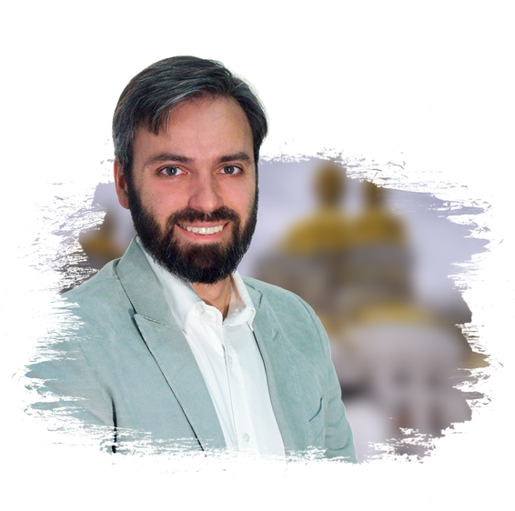

Полноценная христианская жизнь в информационном обществе
Используем современные технологии на благо Православной Церкви
Воскресная школа онлайн, братство трезвости, молитва по соглашению и другие проекты. Узнайте, как мы решились послужить Господу Богу с помощью Интернет-технологий
Нищего посылает к тебе Бог (с) Иоанн Златоуст
История дня
«Уже 190 детей из окрестных деревень ждут открытия воскресной школы»
Здравствуйте, братья и сестры!
Просим посильной помощи отцу Владимиру (Дроздову)
и его приходу, которым просто негде обучить желающих
воцерковиться ребят!
Читать полностью